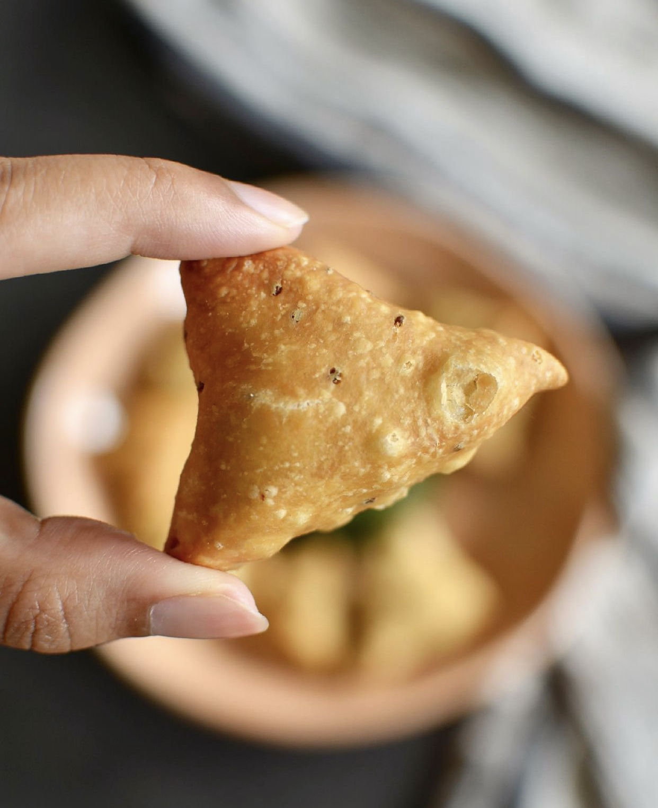

Mini Samosas

Mini Samosa
These smol samosas are so quick and perfect for smashed samosa sandwiches!
Quick video on my Reels Spicy cilantro chutney recipe is on my feed!
Ingredients
- Pre-made dough of choice
- 1/2 tbsp oil
- 1 small potato
- Red onion
- 1/4 tsp ginger, grated
- Handful of frozen peas
- 1/4 tsp cumin seeds
- 1/4 tsp coriander seeds
- Pinch of hing
- 1/4 tsp red chili powder
- Pinch of tumeric powder
- 1/2 tsp garam masala
- 1/4 tsp amchur (mango powder)
Instructions
- Cook your potato by boiling, steaming, or microwaving until soft
- Once cooked, peel potato and smash with a fork and set aside
- Make your filling in a small pan by adding oil and cumin, coriander,
fennel seeds. Then onion and ginger and saute until a bit translucent. Add
all your ground spices, peas, and saute for 1 minute. Then add smashed
potato, mix well, taste, and adjust for salt or spices.
- Start heating up your vegetable/canola oil in a pan or pot on medium
heat.